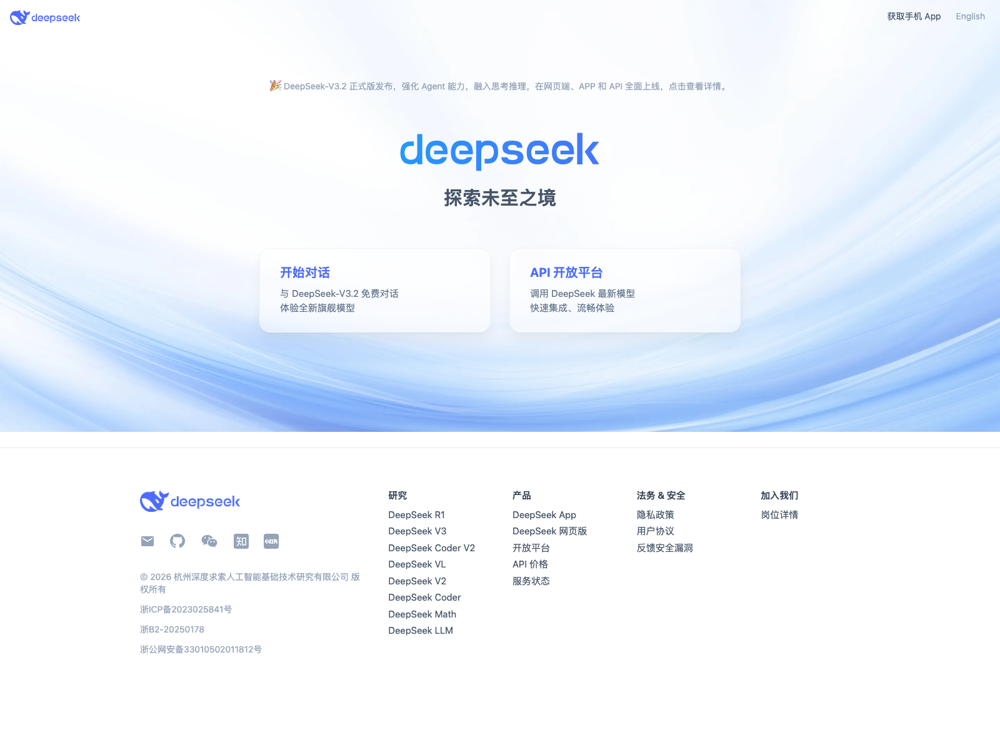
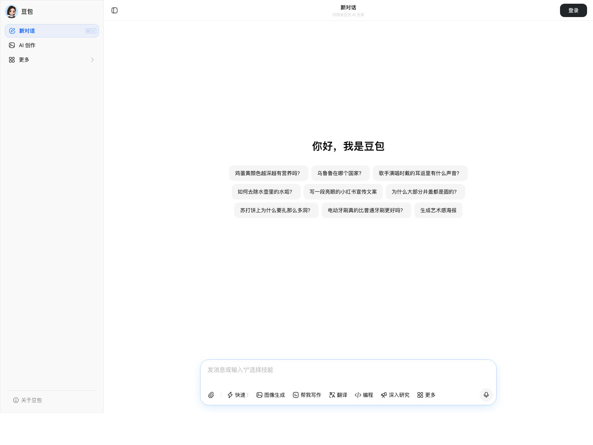
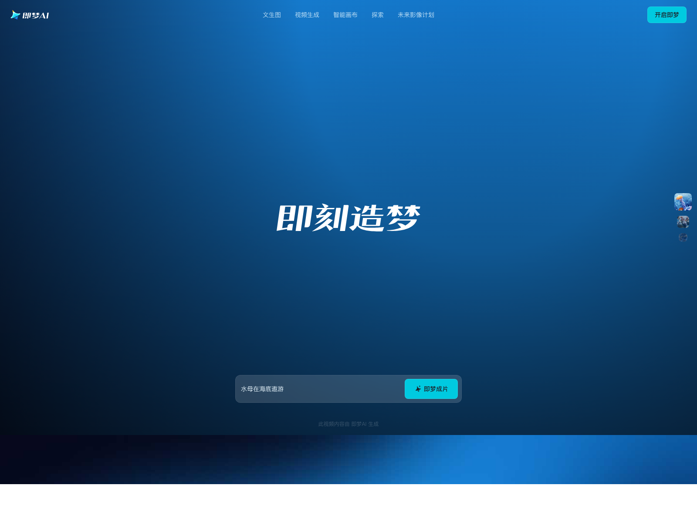
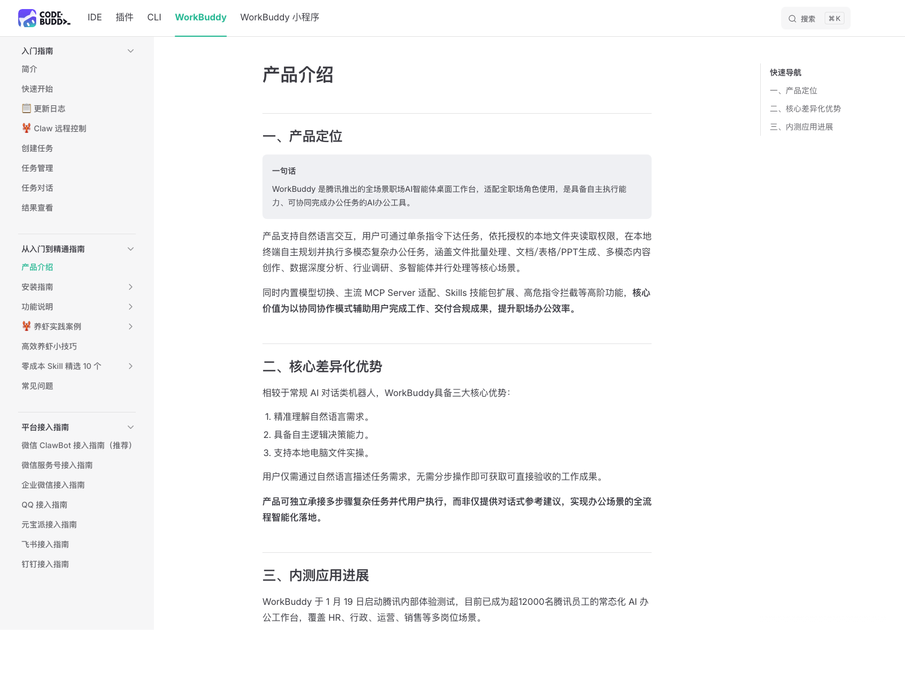
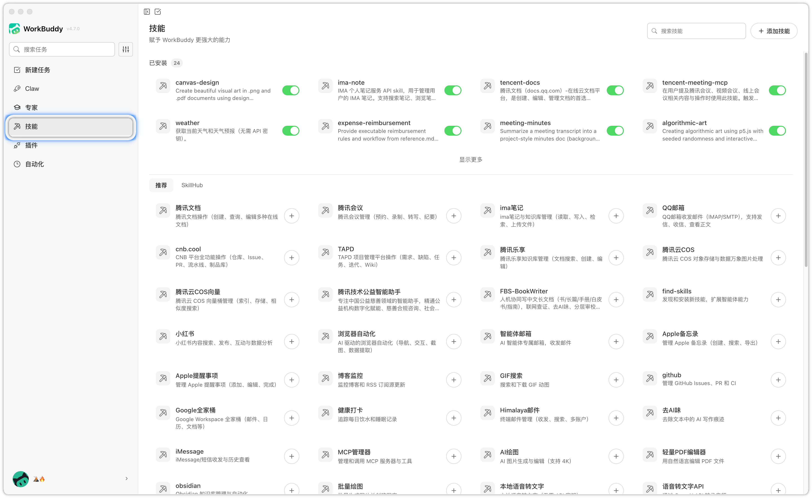
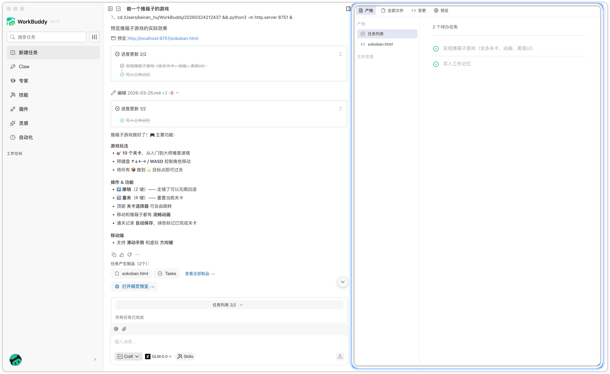
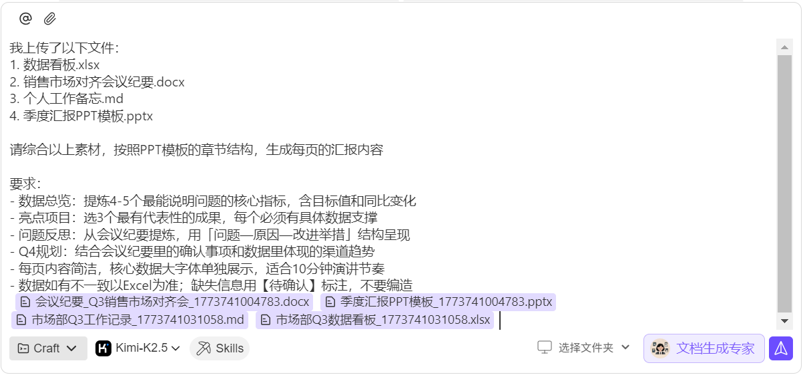
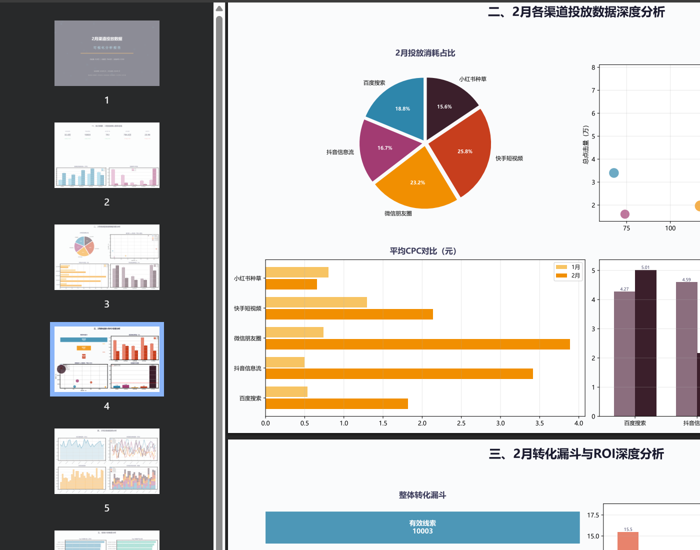

⏱️ 开场 0-2分钟 | 情绪：好奇心峰值
🔥 悬念大师秘籍
?
🎯 专为教培机构校长与小机构主理人设计
教培机构 AI 入门实战课
招生内容、沟通准备、续班和复盘，哪一步最值得先交给 AI？
教培机构最先适合用 AI 的，不是“全自动运营”，而是那些高频、低风险、可复核的任务。典型切口包括：咨询口径整理、招生内容起稿、校区数据整理与复盘。
今天这套课件只有 3 种页面：知识点负责讲清概念，演示负责带你看懂工具，当堂小实验负责让你自己上手做一遍。
带走 1 个
优先落地任务清单
带走 1 个
可直接复用的指令模板
带走 1 套
人工复核边界
01 / 19
⏱️ 破冰 2-5分钟 | 情绪：参与感建立
🤝 互动开始
课前小调查 📋
❓ 问题1：你以前用过AI工具吗？
打 1 ：完全没用过
打 2 ：听说过但没用过
打 3 ：偶尔在用
打 4 ：经常在用
❓ 问题2：你机构里最头疼的重复工作是什么？
整理常见咨询口径/沟通草稿
写招生文案/活动通知
做课后反馈/成长汇报
整理名单和数据
做海报/公开课宣传
续班和回访跟进
先选一项：你最想优先优化哪类重复工作？👇
课前自查的目的，是先找到机构里最耗时的重复工作。通常值得优先尝试 AI 的，是整理咨询口径、写通知文案、做反馈和整理数据这几类任务。
先定一个目标：沟通准备、文案、反馈、数据，今天只选 1 项最想解决的。
02 / 19
⏱️ 概念 5-12分钟 | 情绪：认知建立
💡 快速补脑
📘 知识点 1
先从 DeepSeek 开始：什么是 AI？
产品截图 · DeepSeek 官网
先看这个界面：它很适合做第一轮文本对话
在这个页面，你先看 3 个位置：输入框、发送按钮、回答区。先感受一句话就能换来第一版结果。

第 1 步：先看底部输入框
第 2 步：输入一句真实任务再发送
第 3 步：去回答区找对象、事情、时间
看完试一试
用一句真实需求，让 AI 先出第一版
- 直接打开 DeepSeek，先写一句你今天真会用到的话。
- 推荐起手句：帮我起草一条周五公开课活动通知，发给已报名试听的家长，语气专业简洁。
- 验收标准：结果里至少要有对象、事情、时间 3 个关键要素；不够就继续补一句。
先拿到第一版，再改一轮。做到这里，你就会明白：AI 可以先替你起稿。
照着做
1
先找底部输入框，先从最基础的对话入口开始，不需要同时研究太多按钮。
2
把一句真实任务输进去，先拿到第一版结果，再逐步调整。
3
盯回答区，看看对象、事情、时间是否齐全，不齐就继续补一句。
看到什么算完成
✓
成功标志：它已经给出一版结构完整的通知草稿，而不是偏离任务。
!
如果结果不对：先检查是不是没说清写给谁、做什么、什么口气。
历史一笔带过
1950 年，图灵提出一个有名的问题：如果机器聊天聊到让人分不清对面是不是人，算不算“会思考”？这就是后来常说的图灵测试，也可以理解成“机器能不能聊得像人”。
老一代 AI
过去很多 AI 更像“规则表 + 人工经验”。工程师先告诉机器该看什么特征，再按规则判断，聪明但不够灵活。
今天的大模型
现在更像让模型先读海量数据，自己学模式。简单说，过去更像手写答案；现在更像先让它大量学习再现场作答。
这一页记住 1 件事
AI = 能理解你的输入并先给第一版，但最后怎么发、能不能发，仍然要你判断。
第一页实验只做一件事：让大家亲手感受到“AI 会听懂我的话，并且先给我一版结果”。先有这个体感，后面的新概念才会长在体验上。
现在试试：写一句真实任务，先拿到第一版，再追问 1 轮。
03 / 19
⏱️ 核心 12-18分钟 | 情绪：兴奋期
⚡ 关键区分
📘 知识点 2
继续用 DeepSeek：什么是大模型？
产品截图 · 继续用 DeepSeek
在同一个对话里连续追问 3 轮，你会更容易理解什么是大模型
不用切到别的软件，就用刚才那条对话继续改，看它怎样一轮轮贴近你的真实需求。
第 1 步：沿用上一条对话
第 2 步：连续补对象、场景、限制
第 3 步：观察答案一轮比一轮更贴合
看完试一试
同一条需求，连续改 3 轮
- 不新开会话，直接继续追问。
- 第 1 轮改对象和口吻，第 2 轮补时间地点，第 3 轮加边界和输出格式。
- 观察一下：为什么越追问，结果越贴近真实场景？
关键不是它“更像在聊天”，而是它能持续理解上下文，并按你的新约束继续修改。
照着做
2
第 1 轮改对象和口吻，让它更贴近你真实受众。
3
第 2、3 轮再补限制和输出，看它能不能顺着上下文继续改。
看到什么算完成
✓
成功标志：每追问一轮，结果都更贴业务，而不是前后断掉重来。
!
追问四件套：对象、场景、限制、输出。追不准时先补这 4 样。
1. 特征提取
这个词听起来专业，你可以把它理解成：先把文字、图片变成机器能算的数字信号，像把一句话拆成它能处理的“痕迹”和模式。
2. 学习
训练时，模型会看数千亿到万亿级 token 的语料。`token` 可以粗略理解成被模型切开的文本片段，不完全等于一个字。它就是在大量样本里学规律。
3. 推理
你现在发问题时，模型并不是临时再上学，而是在用已经学到的参数做推理和预测，算出下一句最可能怎么接、怎样更贴近你的要求。
这一页记住 1 件事
大模型 = 先经过海量数据学习，再在推理阶段按上下文和约束生成结果。它很强，但也不是永远对，所以照样要复核。
这页主要是把刚才的体验说清楚。学员不需要背定义，只要知道：DeepSeek、豆包这些工具背后，其实都是大模型。
用自己的话说一句：为什么刚才那个实验是在用大模型？
04 / 19
⏱️ 判断 18-22分钟 | 情绪：代入
🏫 行业判断
📘 知识点 3
换豆包上手：什么叫多模态？什么叫 AIGC（AI 生成内容）？
产品截图 · 豆包
先看豆包
在这个页面，你可以用它做“看图 + 追问”。

第 1 步：点上传入口
第 2 步：选一张现成素材
第 3 步：补一句追问再看回答
产品截图 · 即梦
再看即梦
在这个页面，你可以看到 AI 生成图片和视频。

第 1 步：找到生成入口
第 2 步：输入想要的画面描述
第 3 步：看它生成了什么新内容
看完试一试 A
先做“看图 + 追问”，理解多模态
- 上传一张现成素材，可以是海报、课程表、教室照片或聊天截图。
- 追问一句：这张图哪里最不清楚？如果我要发给试听家长，最该先改哪 3 处？
- 重点不是生成，而是感受 AI 已经在“看图 + 理解图”。
看完试一试 B
再看“生成图片/视频”，理解 AIGC
- 现场看一轮海报图、课程封面图或短视频片段生成。
- 分清两件事：上一轮是“看懂素材”，这一轮是“生成新内容”。
- 验收标准：如果内容是 AI 新做出来的，不是改你原图，那它就属于 AIGC。
按豆包图操作
2
再补一句追问，不要只发图不说话，比如“最该先改哪 3 处”。
3
看回答区，如果它是在点评你现有素材，这就是多模态。
按即梦图操作
3
判断成功标志：它是新生成内容，不是在点评你原图，这就属于 AIGC。
这一页记住 2 件事
多模态 = 不只看文字，还能理解图片/语音。AIGC = 已经开始替你生成新的内容成品。
这一页的顺序很重要：先让大家体验豆包“看图 + 追问”，理解什么叫多模态；再看 AI 生成图片和视频，理解什么叫 AIGC。
现在试试：上传一张素材并追问一次，再判断这是多模态还是 AIGC。
05 / 19
⏱️ 工具 22-25分钟 | 情绪：期待
🛠️ 今天的主角
📘 知识点 4
什么是 Agent？什么是“龙虾”？
产品截图 · WorkBuddy 官方文档
先看 WorkBuddy：它不只是聊天界面，更像一个能做事的 AI 工作台
在这个页面，你先看 3 个信号：有技能、有步骤、有交付物。

第 1 步：先看可调用能力入口
第 2 步：再看任务会不会自己拆步骤
第 3 步：最后看有没有做出结果文件
照着做
1
先看技能入口，确认它不是纯聊天框，而是能挂能力的工作台。
2
再看任务步骤区，观察它会不会自己拆成几步往前做。
3
最后看结果区，有没有文件、表格、提纲这类做出来的东西。
看到什么算完成
✓
成功标志：它开始拆步骤、调工具、交付结果，而不是只停留在说明层面。
!
“养龙虾”：更准确地说，是把你自己反复要做的操作，慢慢沉淀成 OpenClaw 里的 skill，方便以后反复复用。
看完试一试
给 Buddy 一个“要交付物”的任务
- 示例任务：把本周试听、到课和转化数据整理成复盘表，再给出 1 页汇报 PPT 提纲。
- 不要只看结果，要看它有没有自己拆步骤、调用工具、做出文件或结构化结果。
- 验收标准：如果它只是回一段建议，还不算 Agent 真的参与执行；如果它开始真正把事情往前推进，才算。
这一页记住 2 件事
Agent = 会拆任务、调工具、把事情一步步往前做的 AI 助手。“养龙虾” = 把你常做的操作沉淀成 OpenClaw 里的 skill，下次就不用从头再教一遍。
到这里就可以把“龙虾”这个词讲清楚了。它本质上指的是：不只让 AI 临时帮一次，而是把你已经验证过的日常操作沉淀成 skill，后面可以反复调用。
补全一句话：AIGC 是先帮我生成，Agent 是开始帮我一步步把事 ______。
06 / 19
⏱️ 工具 25-28分钟 | 情绪：期待
💪 它能做什么
🎬 演示 1
什么是 Computer Use（让 AI 动电脑）？为什么 WorkBuddy 值得演示？
产品截图 · Skills（可调用能力列表）
先看可调用能力列表
Browser、Web Search、Office 这些能力，可以理解成 AI 真正能拿来做事的工具箱。

第 1 步：先打开可调用能力
第 2 步：确认 Browser / Search / Office 已开启
第 3 步：再下跨网页和文件的任务
产品截图 · 结果区
再看右侧结果面板
文件、预览、改动都能看见。你可以把这里理解成“它做完的东西都放在这儿，方便你检查”。

第 1 步：先看有没有结果文件出现
第 2 步：再点开预览
第 3 步：确认它真的做出了东西
演示示例
让 AI 真正“动网页、动文件、动电脑”
- 先启用 Browser、Web Search、Office，再给它一个跨网页和文件的任务。
- 示例任务：搜 3 个同城公开课页面，摘要并截图留档，再整理成 1 页对比表。
- 重点观察：它是不是已经真的去点网页、整理文件、产出结果，而不只是停留在建议层面。
这一步最适合解释 Computer Use：也就是 AI 开始帮你动电脑，去点网页、读文档、整理文件。
照着做
1
先开内置能力，把 Browser、Web Search、Office 这类执行能力准备好。
2
下一个跨网页和文件的任务，尽量避免只问一句简单文案问题。
3
盯右侧结果区，看它是不是已经真的打开网页、截图、整理文件。
什么时候适合用
✓
适合：要打开网页、点开详情、滚动查看、整理文件、导出结果文件。
!
不一定需要：如果只是改一句文案、问一个概念，直接文本对话通常更快。
这一页记住 1 件事
Computer Use = 让 AI 不只给建议，而是真的去操作网页、文件和界面，适合跨步骤任务。
最后一个词要在这里带出来：Computer Use。学员不需要背技术定义，只要看懂一件事就够了：当 AI 开始真的去动电脑、动文件、动网页，它就不只是“会生成”，而是在“会替你做电脑上的动作”。
试着把 6 个词串起来：AI、大模型、多模态、AIGC、Agent、Computer Use（让 AI 动电脑）。你最想先试哪一层？
07 / 19
⏱️ 演示 25-30分钟 | 情绪：第一波高潮
🎬 现场震撼演示
🎬 演示 2
Workshop：按“先看截图锚点 - 再照着做 - 最后验收”选 1 条马上试
重点不是看演示效果，而是照着任务单做一遍。每条都先告诉你图里该看哪里，再告诉你怎么输入，最后告诉你什么结果才算真的完成。
1
先看截图位置
先看清附件区、结果区、预览区分别在哪里
2
再抄最小口令
每页都给一句可直接复用的最小指令
3
照着后台走
看懂它先读什么、再做什么、最后产出什么
4
最后验收
每页都明确完成标志和常见卡点，防止“看起来会了”
预案 A | 办公文档四件套
本周经营复盘：文档 + PPT 一次出齐
很适合作为第一条实操预案。它最容易让你感觉到“不是写一段字，而是真的把文件做出来了”。
你可以直接这样说：把本周试听数据表、教研纪要和周汇报模板整理成 1 页摘要、1 份复盘文档和 1 页汇报 PPT。
后台步骤：读文件 → 提炼结构 → 生成 Word / PPT / Excel 文件 → 右侧预览复核
预案 B | Web Search
公开课调研：先搜，再筛，再归纳
这一类特别适合亲力亲为的校长和主理人，因为最需要的是更快拿到公开信息，而不是自己手动翻十几个网页。
你可以直接这样说：搜最近 30 天本地教培机构公开课主题，筛出最值得参考的 5 条，并解释为什么值得看。
后台步骤：联网检索 → 按时间过滤 → AI 摘要归纳 → 得到可讨论的候选清单
预案 C | Agent Browser（会点网页的浏览能力）
网页留档：把需要点开和滚动的页面真正读完
这条适合接在搜索后面，因为有些网页不是搜到就算了，还要点开、展开、截图，才算完成任务。
你可以直接这样说：打开这几家机构的活动页，读完需要展开的内容，整理摘要并为关键页面截图留档。
后台步骤：打开网页 → 点击 / 滚动 / 展开 → 提取信息 → 输出摘要与截图文件
预案 D | 轻量小应用原型
再做一个门店小工具，不必每次都从聊天开始
这一类很容易让校长和主理人代入。重点不是“去开发一个 App”，而是把高频小动作做成一个能反复使用的小工具，比如试听登记助手、课后反馈生成器、公开课选题收集器。
你可以直接这样说：帮我快速搭一个“试听登记小工具”原型，字段包含学生姓名、年级、意向科目、试听时间、来源渠道，并自动整理成表格供我后续跟进。
后台步骤：先定义小工具用途 → 再设计输入字段和输出表格 → 调用可用能力生成原型 → 产出一个能直接试跑的轻量工具
门店里的实际价值：前台只要按字段录入，你自己就能直接看到一张标准试听登记表，少掉微信里反复补问和手工二次整理。
这一页不是让大家看个热闹，而是让大家知道：演示要讲清楚口令、截图、操作步骤和最后结果。这样大家回去才知道怎么自己做。
这 4 条预案里，你最想先跑哪条？A 周复盘文档/PPT，B 公开课调研，C 网页留档，还是 D 做一个门店小工具原型？
08 / 19
⏱️ Workshop 30-40分钟 | 情绪：动手体验
✍️ 场景一
🧪 当堂小实验 1
场景一：周数据复盘 + 文档 / PPT 一次出齐

先看左图两个位置：底部紫色文件卡片，表示素材已经挂上；上方输入区的大段要求，表示任务边界已经说清楚。
再看右图两个位置：中间红框是结果清单，右侧预览窗是文件内容。两边都出来，才算真的把文件做出来。
📝 你可以直接这样说
“我上传了本周试听数据表、家长会纪要和周汇报模板。请整理成 1 页经营摘要、1 份周复盘文档、1 页汇报 PPT。重点写试听人数、到课率、转化率、主要问题和下周动作；不确定的数据请标成【待确认】。”
🧭 按图一步步做
- 第 1 步先看左图底部：至少要看到数据表、纪要、模板这几张紫色文件卡片已经挂上。
- 第 2 步再发指令：把要出的交付物写死，明确是“摘要 + 文档 + PPT”，不是泛泛地说“帮我整理一下”。
- 第 3 步看右图中间红框：先确认结果清单里真的出现了文档、PPT、表格这些文件名。
- 第 4 步再看右侧预览窗：能翻到具体内容页，才算文件真的生成出来了。
- 如果没出来：先查是不是漏传模板，或者只写了“总结”却没写“生成文件”。
⚙️ 它会怎么做
- 先读素材：读 Excel 里的数字、纪要里的问题、模板里的版式要求。
- 再搭结构：先分出指标、问题、动作，再决定摘要页和汇报页怎么排。
- 再生成文件：不是只回一段话，而是直接产出文档、PPT 和可继续修改的结果文件。
- 最后复核：在产物面板里先看文件名，再看预览内容，确认哪些地方要人工补数据。
✅ 最后会出来什么
一页本周经营摘要、一份复盘文档、一页汇报 PPT，以及所有需要二次确认的地方都被明确标出来。如果最后只回一段文字，不算完成。
这页主要想让大家看到：只要素材给得清楚，Buddy 不只是回一段话，而是真的能把文档和 PPT 先做出来。
Workshop 带走动作 1：找你机构一张本周真实数据表，加一份会议纪要或活动方案，课后跑一次“摘要 + 文档 + PPT”三件套。
09 / 19
⏱️ Workshop 40-50分钟 | 情绪：惊叹
💬 场景二
🧪 当堂小实验 2
场景二：公开课调研 + 网页留档
第一步先看左图红框：这里是候选清单。先拿到“搜到了什么、为什么值得看”，再决定继续读哪几个网页。
第二步再看右图：左侧红框是网页重点摘要，右侧红框是整理后的留档文档预览，说明内容已经被真正读完并沉淀下来。
💬 你可以直接这样说
“请搜索我所在城市近 30 天的少儿编程、数学思维和英语公开课活动，筛出 5 条值得参考的案例。然后打开其中最有代表性的 3 个活动页，提炼它们的课程主题、价格表达、家长关心点和海报卖点，并截图留档。”
🧭 按图一步步做
- 第 1 步先看左图红框：先让它给出候选清单，每条最好带标题、时间和“为什么值得看”。
- 第 2 步再补一句：明确要求“打开其中 3 个活动页继续读”，不要停在搜索结果页。
- 第 3 步看右图左侧红框：这里应该已经出现网页重点摘要，而不是只剩一串链接。
- 第 4 步再看右图右侧红框：能看到整理好的文档预览，说明这份调研已经可以留档。
- 如果没出来：先查搜索边界是不是太宽，或者只写了“搜一下”却没写“打开网页并整理留档”。
⚙️ 它会怎么做
- 先联网搜：先把最近公开信息拉出来，不靠印象判断市场。
- 再筛样本：按城市、时间、主题筛掉不相关结果，留下最值得看的几条。
- 再读网页：把需要点开、展开、滚动的页面真正读完，再提炼课程主题、价格表达和家长关心点。
- 最后留档：把摘要、截图和备注整理成一份能带回去开会的材料。
✅ 最后会出来什么
一份“值得参考的公开课案例清单”，每条带课程主题、卖点摘要、截图留档和你自己的备注空间。如果只有链接、没有摘要和留档，不算完成。
这页想让大家明白：调研不是搜到结果就结束。更有用的做法是先找到候选，再把关键网页读完、截图、留档，这样回头开会才拿得出依据。
如果今天就做一次竞品调研，你最想先比哪一项？公开课主题、海报卖点、价格表达，还是家长常见问题？
10 / 19
⏱️ Workshop 50-60分钟 | 情绪：惊喜
📊 场景三
🧪 当堂小实验 3
场景三：试听数据分析并自动出图
 先看左图：这已经是生成后的数据报告预览，不只是口头分析。能看到多页图表，说明表格已经被读进去并开始出图。
先看左图：这已经是生成后的数据报告预览，不只是口头分析。能看到多页图表，说明表格已经被读进去并开始出图。

再看右图验收区：左侧缩略图里能看到多页报表，当前页会高亮；主区域里真的有图表，不是一段空泛总结。
📊 你可以直接这样说
“请读取这份试听数据表，按班型和渠道统计咨询量、到课率、转化率和续班意向，分别生成柱状图、趋势图和一段复盘结论。请特别指出到课率最低的两个环节，并给出下周优先处理建议。”
🧭 按图一步步做
- 第 1 步先传表：上传一张真实试听或续班数据表，字段名尽量写清楚，例如渠道、班型、咨询量、到课率、转化率。
- 第 2 步把图表写清楚：不要只说“分析一下”，要明确写“分别生成柱状图、趋势图和复盘结论”。
- 第 3 步看左图：先确认结果已经进到正式报告预览，而不是只返回几句口头建议。
- 第 4 步看右图：左侧缩略图里最好能看到多页报表，主区域里真的有图表和标题。
- 如果没出来：先查字段名是否混乱，或者你没有把“要出什么图”写清楚。
⚙️ 它会怎么做
- 先读表：识别字段、处理空值、统一统计口径，先把表格读明白。
- 再出图：按班型、渠道、时间这些维度生成柱状图、趋势图、漏斗图等图表。
- 再写结论：指出低转化环节、异常点和下周优先动作。
- 最后复核：重点检查图表标题、统计口径和异常值，确认结论有没有跑偏。
✅ 最后会出来什么
一组图表、一段复盘总结，以及一份明确写着“下周先追哪两个问题”的可执行建议。如果没有图，或者没有下周动作，不算完成。
这页很容易让大家觉得“我下周就能试”。因为输入很清楚，就是表格；输出也很清楚，就是图表和结论。只要口径能检查，这类任务通常都很适合先让 AI 打底。
Workshop 带走动作 2：找出一张本周可用的试听或续班数据表，完成一次“出图 + 结论 + 下周动作”的 AI 复盘。
11 / 19
⏱️ 案例 60-80分钟 | 情绪：学习深入
📊 场景示意案例
📘 知识点 5
痛点
班型差异、试听流程、上课时间总被反复问，你和前台每天都被相同问题打断，跟进记录还分散在聊天里
AI解决方案
AI先整理常见咨询口径、试听信息收集清单和跟进摘要模板，你人工挑选后再用于微信、电话或面谈
AI提示词
"请把班型说明、试听安排、信息收集项整理成一份咨询口径草稿；涉及价格和优惠时提醒我亲自确认。"
📈
示意收益：沟通口径更稳、记录更完整，你把时间留给真正值得亲自跟进的人
痛点
班里学习进度参差不齐，你很难及时发现掉队学员，回访又总是靠临时补救，完课率只有45%
AI解决方案
AI先整理学习数据、生成掉队预警清单和回访提纲，方便你先看见风险再决定怎么跟进
AI提示词
"分析本周学习数据，识别近两周活跃度下滑的学员，并给我一份回访提纲。"
痛点
家长总问“孩子学得怎么样”，你和老师课后都要花大量时间写个性化反馈，精力被切得很碎
AI解决方案
AI先整理课堂记录、生成家长汇报草稿和阶段建议，再由你或老师补充关键观察后发送
AI提示词
"根据这学期课堂记录，生成一份给家长的成长汇报草稿，突出进步、作品亮点和下阶段练习建议。"
本页案例使用的是示意口径，重点不在于某个增长数字，而在于看懂任务拆法：当咨询口径准备、学习跟进、课后反馈被标准化后，人力就能重新回到高价值判断和关键沟通上。
看完这 3 个案例后，你最想先复制的是“咨询口径包”“学习跟进”还是“课后反馈”？
12 / 19
⏱️ 方法 80-88分钟 | 情绪：看懂边界
💡 先做这些
📘 知识点 6
哪些任务适合先交给 AI？
🎓
常见咨询口径
试听安排、班型说明、材料清单、报名流程，适合先做 FAQ 素材包、电话/面谈口径和回复草稿
✓ 适合原因：高频、规则清晰、便于复核
📝
内容起稿
招生海报文案、活动通知、公开课介绍、续班提醒等，适合让 AI 先出第一版
✓ 适合原因：结构固定、复用率高
👶
课后反馈草稿
你提供课堂记录，AI 先整理成长汇报和练习建议草稿，再补上关键观察
✓ 适合原因：素材已有、你可快速定稿
🏋️
数据整理复盘
试听、到课、转化、续班、出勤等数据，适合让 AI 先整理表格、画图、提炼洞察
✓ 适合原因：数据可验证、过程可回看
🎭
文件批量处理
报名表、照片、作业、讲义、录屏文件等批量归档、重命名、转格式
✓ 适合原因：机械重复、最省你亲自处理的时间
🎯
信息收集与调研
竞品课程表、公开课活动、周边价格带、公开咨询高频问题汇总，适合先搜集整理
✓ 适合原因：先收集，再由你判断
现实提醒：这节课不讲直接接入微信自动回复。更适合先做 FAQ 素材包、沟通草稿、记录摘要和人工发送前复核。
适合先交给 AI 的任务通常同时满足三个条件：重复率高、规则相对明确、结果容易检查。起步时，优先从这类任务里挑一个最稳的切口。
如果本周只试 1 个任务，你最愿意先把哪一类交给 AI 打底？
13 / 19
⏱️ 核心技能 75-85分钟 | 情绪：掌握感
🎯 范式转变
📘 知识点 7
哪些任务必须人工复核？
⚠️ 必须人工确认的内容
价格、优惠、退费政策
升学承诺、提分承诺、结果判断
个体化学习建议、健康安全相关提醒
原因：这些内容一旦说错，影响的是机构信誉、合规风险和家长信任。
要求：AI 可以先起草，但最后一定要由你亲自确认。
✅ 更稳的协作方式
AI 先整理资料和起草
人来确认口径和边界
最终再发送或执行
核心：把 AI 放在“提速”和“打底”的位置，而不是完全替你拍板。
结果：既省时间，也保留专业判断和信任感。
这页最重要的一点是：只要涉及学员隐私、家长承诺、价格政策、学习判断，AI 只能帮你提速，最后还是要由人来判断。
想清楚一件事：在你机构里，哪些内容一旦说错，影响最大？把那一类全部划进“必须人工复核”。
14 / 19
⏱️ 演示 85-95分钟 | 情绪：恍然大悟
🔥 实际演示
📘 知识点 8
一个马上能用的最小指令模板
1
1. 对象
你要面对谁：家长、潜客、老师、合作方、老客户
2
2. 任务
你想让 AI 做什么：起草、整理、分析、归纳、改写
3
3. 约束
写清边界：不要承诺价格、不要碰隐私、语气要温和专业
4
4. 输出
最后要什么：三版文案、一页表格、一段回复草稿、一个提纲
🎯 你可以直接这样说：
"帮我为三到六年级寒假班意向家长起草一条试听邀约草稿，要求语气专业、不过度营销，不要写死价格和优惠，最后输出3 个可人工修改后发送的版本。"
✓ 先说清“写给谁”
✓ 再说“要做什么”
✓ 明确“不能做什么”
✓ 最后指定“交付格式”
大多数教培场景并不需要复杂提示词。先记住一个最小模板：对象、任务、约束、输出格式，就足以覆盖大部分起稿、整理和分析类任务。
带走动作 3：用“对象 + 任务 + 约束 + 输出”模板，写出你机构的第一条正式指令并实际跑一次。
15 / 19
⏱️ 工具 95-105分钟 | 情绪：成就期
🧰 工具判断
📘 知识点 9
工具生态怎么看，才不容易被热词带跑？
不要先问“哪个最火”，先问它能不能接住你机构的任务：能不能处理文档、表格、图片、文件，能不能保留人工审核点。
📱
手机
=
🤖
Agent
=
🛒
工具箱
=
⚡
可调用能力
📄
办公套件
飞书/钉钉/企微等
文档、表格、IM、会议、审批，实际能力看权限和接入方式
🎨
设计创意
海报/图像/PPT
更适合先起草结构和版本，再人工细修视觉和品牌口径
📊
数据分析
读取/分析/报表
适合先做统计、可视化和初步洞察，再由人决定动作
🔍
搜索知识
查资料/竞品/价格
适合先搜集公开信息，结论和判断仍然留给你自己
更稳妥的工具判断方式是：先看它能否接住你的真实任务，再看权限、版本和接入方式。不同平台的可用能力会有差异，不宜做一刀切判断。
16 / 19
⏱️ 总结 105-115分钟 | 情绪：行动冲动
✅ 关键带走
✅ 课程总结
这节直播课结束时，你应该能明确说清楚三件事：先跑哪个任务、第一条指令怎么写、哪些地方必须亲自把关。
"先找高频、低风险、可复核的任务
再让 AI 帮你提速"
1
先选对任务
招生内容、沟通准备、复盘先做
先从可控场景开始
2
会用一个模板
对象、任务、约束、输出
足够覆盖大多数场景
3
保留人工复核
涉及承诺、价格、评价、隐私
一定人工把关
今晚已经拿到 1 个
优先试跑的真实场景
今晚已经拿到 1 条
能直接复制的最小指令
今晚已经拿到 1 张
机构可用的审核边界表
这节课的目标不是只让你“听懂 AI”，而是让你今晚回去就能自己跑出第一版结果。
🚀 今天回去，先自己跑通 1 个低风险、高重复任务的第一版
本课最重要的收获，不是认识了多少新词，而是已经明确了落地顺序：先把自己从重复事务里解放出来，再把精力还给教学质量、招生和关键沟通。
课末留一个动作：写下你准备先试的第一个场景，再补一句“这一步我准备保留哪个审核点”。
17 / 19
⏱️ 收尾 115-120分钟 | 情绪：价值延展
🎁 线下进阶预告
🚀
今天先入门，线下再学更高阶怎么用
线下不会重复讲入门概念，而是直接进入更高阶的实战能力：怎么把 AI 从“会对话”升级到“会协作、会执行、会沉淀资产”。
今天直播课
先学会起步
先知道哪些任务适合先做、指令怎么写、哪些地方必须人工审核，保证回去就能跑出第一版。
线下进阶课
再学会协作
继续把 AI 从单点工具升级成数字员工 + Agent 工作流。也就是让 AI 不只完成一件小事，而是能按步骤接着往下做。
最终效果
做成机构能力
最后沉淀成模板、SOP、知识库和任务链。也就是模板、标准步骤单、自家资料库和固定流程都能留得下来。
线下进阶会继续打开这些更高阶能力
线下课不只是再听一遍概念，而是把你机构的真实资料带进来，继续往“更省人、更成体系、更像数字员工协作”去升级。
继续往前学，怎么把招生助理、教务助理、复盘助理这些重复动作拆开，让 AI 先接住一部分标准工作。
预告产出：岗位任务拆解表、数字员工职责边界、人工审核点清单
继续往前学，怎么让 1 个人带着 AI 同时跑文案、整理、分析、跟进，在人手有限的情况下先把基础运营跑顺。
预告产出：单人做事流程图、每日例行动作板、校长常用任务面板
🧠
Agent 串联执行
从一问一答升级成一条任务接着一条任务往前做
继续往前学，怎么让这种 AI 助手连起来做搜索、写作、表格、海报、周报，不再停留在“帮我写一句”，而是往结果文件走。
预告产出：多步任务示意图、Agent 做事流程样板、结果检查表
🗂️
机构 AI 资产化
把一次试跑沉淀成长期可复用标准件
继续往前学，怎么把提示词、知识库、SOP、检查表沉淀下来。也就是把自家资料、常用步骤和检查规则都留成固定资产。
预告产出：机构提示词库、门店资料库框架、常用步骤模板与检查表
真正有效的 AI 落地，不靠口号，而靠把一个个真实任务接入日常工作流。更稳的做法通常是先把一件事跑通，再一件件接上去，而不是一口气全铺开。
18 / 19
⏱️ 最后 120分钟 | 情绪：温暖结束
🙏 感谢
🤝
谢谢你们
愿你把重复事务交给 AI，把自己的精力还给增长
19 / 19